CJ型系列橡胶减振器
图片
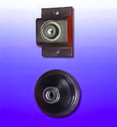为了隔离振动、冲击、降低噪音，常常在振动设备或精密仪表底部和支撑结构之间设置减振器，CJT型阻尼弹簧减振器是一种较理想的减振器。 CJ型橡胶减振器可以广泛应用于各种振动设备的积极隔振和精密仪表的消极隔振。采用该型号系列的减振器对各种机床、水泵、通风机、空气压缩机、冷冻机、柴油发电机等进行积极隔振，可取得满意的隔振效果。由于具有较大的阻尼及较小的水平刚度，CJ型橡胶减振器可应用于精密仪器、设备的消极隔振。

CJT型系列阻尼弹簧减振器
为了隔离振动、冲击、降低噪音，常常在振动设备或精密仪表底部和支撑结构之间设置减振器，CJT型阻尼弹簧减振器，是一种较理想的减振器。
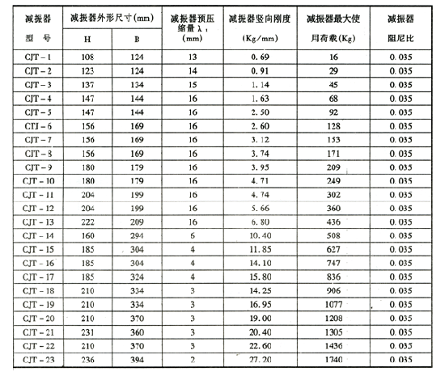CJ型系列橡胶减振器
图片
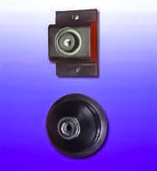为了隔离振动、冲击、降低噪音，常常在振动设备或精密仪表底部和支撑结构之间设置减振器，CJT型阻尼弹簧减振器是一种较理想的减振器。 CJ型橡胶减振器可以广泛应用于各种振动设备的积极隔振和精密仪表的消极隔振。采用该型号系列的减振器对各种机床、水泵、通风机、空气压缩机、冷冻机、柴油发电机等进行积极隔振，可取得满意的隔振效果。由于具有较大的阻尼及较小的水平刚度，CJ型橡胶减振器可应用于精密仪器、设备的消极隔振。
CJ型橡胶减振垫
为了隔离振动、冲击、降低噪音，常常将设备或仪表通过防振橡胶安装在基础或工作台上。CJ型橡胶隔层垫是一种较为理想的防振橡胶垫。
CJ型橡胶隔层垫可广泛应用于各类设备、仪表的积极隔振和消极隔振。采用该隔振垫对各类机床、泵、风机、空气压缩机、冷冻机、柴油发电机等进行积极隔振，可取得满意的隔振效果。对于冲床等冲击机械和水泵、砂轮机等高转速设备，其隔振效果尤为显著。CJ型隔振垫应用于各种电子仪器、光学仪器、精密计测仪器等精密设备、仪表的消极隔振，亦有良好的隔振效果，尤其适用于对水平振动敏感的设备、仪表。
与一般的橡胶垫相比，采用CJ型隔振垫做成的隔振系统具有较低的固有频率和较大的阻尼，因而有较好的减振和降低噪声的效果。该隔振垫采用丁腈橡胶制成，耐油性好，抗老化能力强，使用寿命长。 与常用的钢弹簧减振器和橡胶减振器相比，CJ型隔振垫具有适用范围广、适用方便，价格低廉等优点。该隔振垫可根据要求方便裁切成需要的大小，又可多层串联适用，达到进一步提高隔振效果的目的。
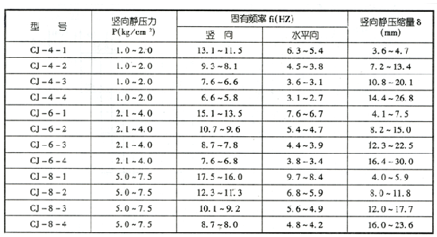SD型橡胶隔振垫
图片
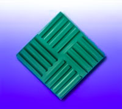SD型减振垫：设计合理、结构新颖、剪切受力，国内首创，固有频率低于压缩型，应力均匀，抗滑性好，配方先进，不易老化，抗油性强，经久耐用。
重向为值荷载：
40° 0.5～1.2kg/cm2
60° 2.0～3.2kb/cm2
80° 4.0～8.0kg/cm2
性能优良：隔振量约15～30分贝 楼下房间减噪量约20～25分贝（A）
用途广泛：适用于各种机器的隔振防冲减噪：机床，电机，风机，泵，冷冻机，空压机，冲压床，锻床，制钉机等。以及精密仪器等，光学仪器等。
使用方便：裁切方便、不同载荷、多层串通、降低频率、安装简便、改善环境、有利生产、保障健康
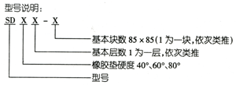SD型橡胶隔振垫性能:
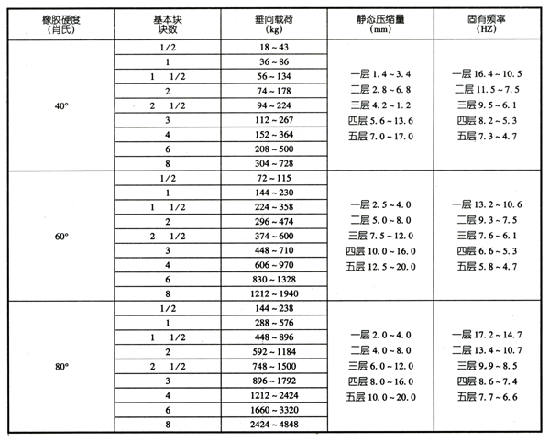注：钢板厚度：1/2～1 1/2块为4mm，2～3块为5mm，4～8块为6mm
TJ1型弹簧减振器
图片
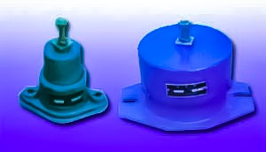滤布经轧光、浸渍PTFE(防水剂)、烘干、定型处理的过滤毡应用在含湿量较大的场合。与普通滤袋相比,因滤料不易堵塞糊袋,故布袋使用寿命延长且清灰周期可延长,通过过的气体流量也加大,故可大量地节省能耗和维护费用,同时也增加了产量。
TJ1型弹簧减振器可作为通风机、鼓风机、水泵及其他设备的隔振元件。以减少设备对外界的影响，进行积极隔振。这种减振器具有结构简单，受力明确，自振频率低，隔振效果好，安装方便，性能可靠等特点。同时具有良好的耐油性、耐老化性、耐高低温性能及使用寿命的长期性。
TJ1-1～5型弹簧减振器:
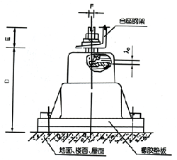 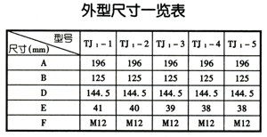 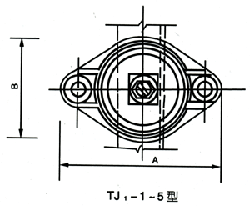TJ1-6～10型弹簧减振器:
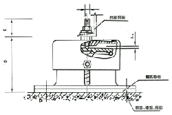 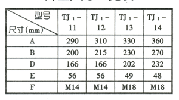 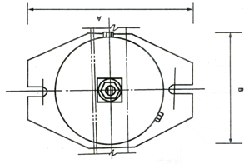TJ2三角等刚度减振器
图片
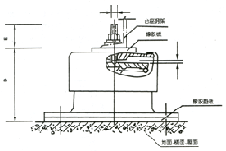 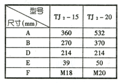 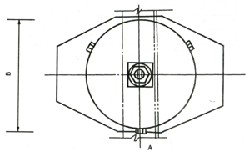TJ2-15型TJ2-20型三向等刚度弹簧减振器可作为各种风机、泵、空气压缩机、空调机等设备的隔振元件，特别适用于L型无基础空压机隔振。这种减振机具有自振频率低、隔振效果好、设备运转平稳、适用寿命长、安装方便、性能可靠等特点。
技术性能表:
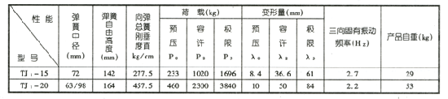TD型、VH型、JH型减振吊钩
图片
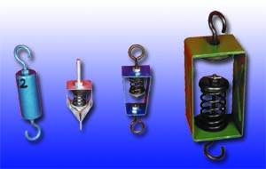 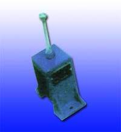为了降低噪声，缓冲及消除固体传声，我厂生产的减振吊架是采用钢弹簧荷橡胶串联形式组成的隔振降噪元件。广泛应用于天花板悬吊，隔离墙的支撑以及风管、气管、各种精密设备地板的吊架等场合。对隔振、降噪、缓冲及消除固体传声均有很明显的效果。
减振吊架常用于天花板悬吊。隔离荷减少上层地板，天花板各组件的噪音，阻塞结构噪声通道。在另一些运用场合，用减振吊架悬吊的天花板有助于保持原始音质，如音乐练习室、播音室等。
减振吊架具有结构简单，受力明确、自振频率低，隔振效果好，坚固耐用，应用广泛等特点，深得用户的信任和欢迎。
TD型减振吊钩技术性能参数表
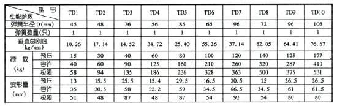VH型减振吊钩技术性能参数表
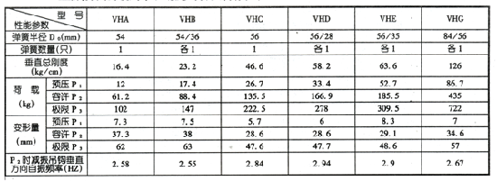JH系列减振吊架技术性能表
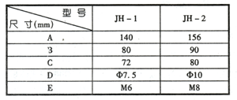可曲挠球体橡胶接头
图片
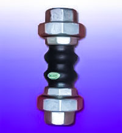为治理振动噪声对环境得危害，以及适应和贯彻我国环境标准得实施，目前我国对泵类及管道振动噪声得治理以引起广大得设计人员和环境管理人员得重视。要解决泵类及管道得振动和噪声，使用可曲挠球体橡胶接头是一个行则有效得办法，它具备很多优点，工程使用安装方便，有较大得阻尼、价格相当便宜，能吸收振动和噪声，它的应用已越来越广泛合理的组装一套橡胶接头可大幅度降低机械振动和结构传递噪声。故可曲挠球体橡胶接头是工程设计部门的必选产品。它为进一步研究设计，开发制造以及防治振动和噪声危害作出更多的贡献。
型号的意义:
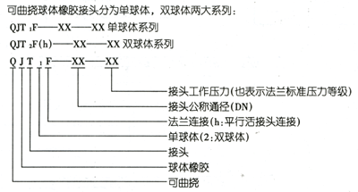 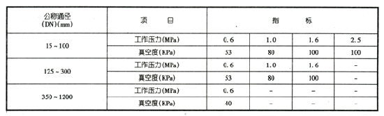QJT1F-型:
QJT2-型:
WHS型弹簧减振吊钩
图片
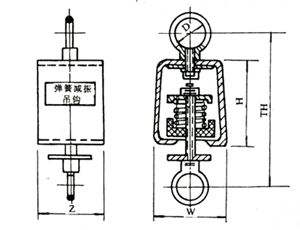WHS减振吊钩安装尺寸表:
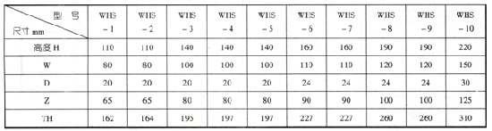WHS系列减振吊钩技术性能一览表:
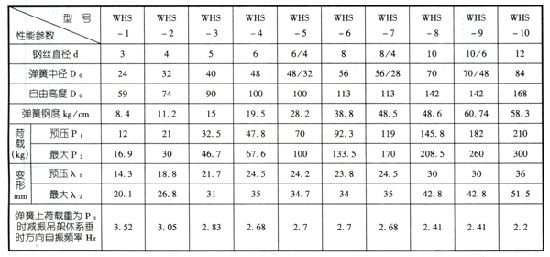JH1型弹簧减振吊钩
简介
JH1 型弹簧减振吊钩专用吊式风机盘管，它具有体积小、外型美观、减振性能好，能降低噪声、延长电机使用寿命。
 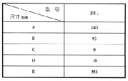
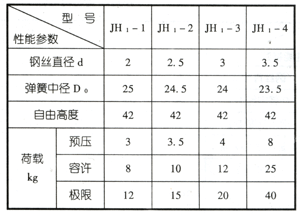
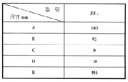
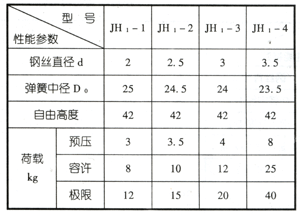